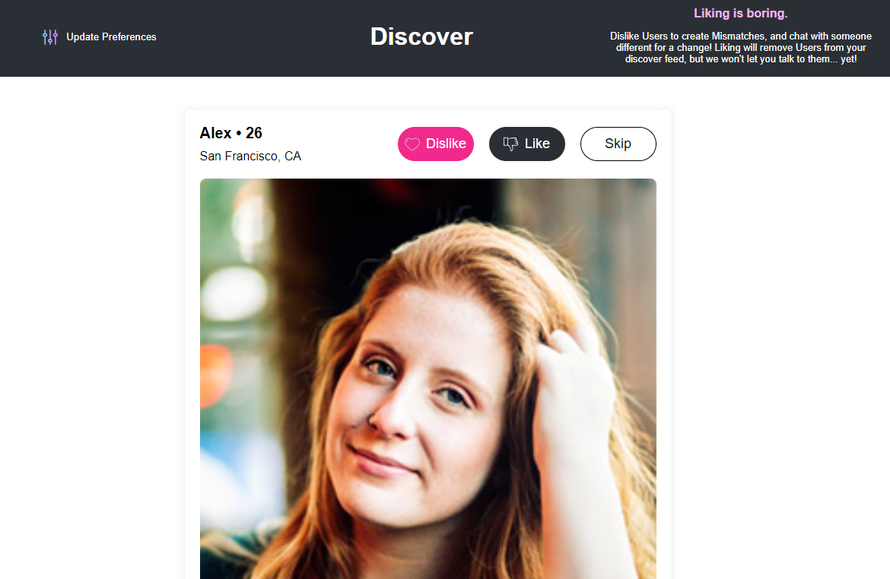
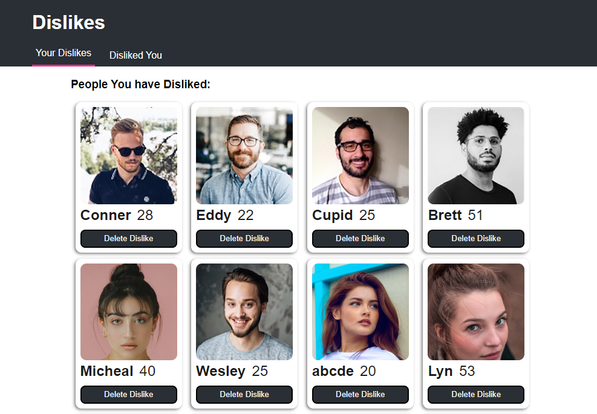
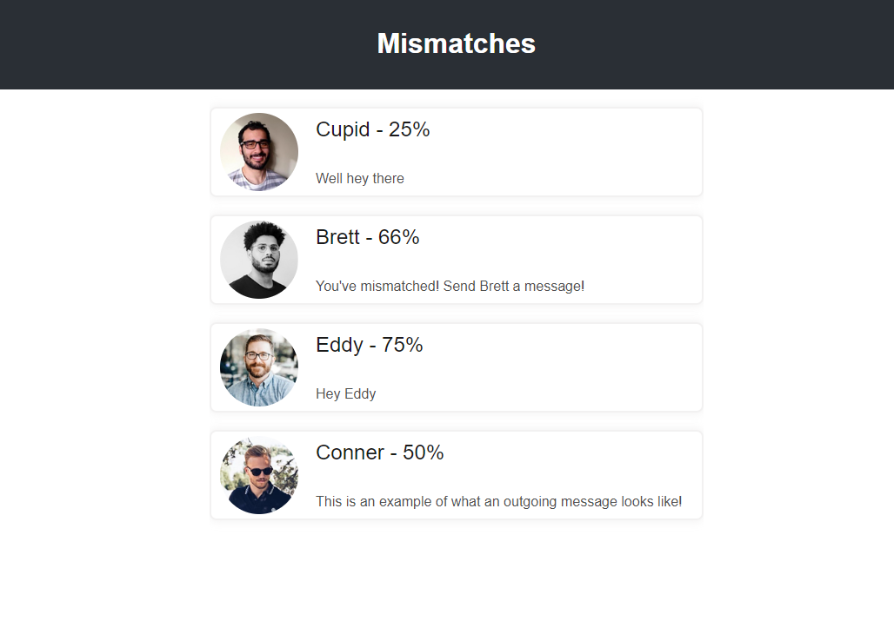

Discover Page
The Discover page of Not Ok, Cupid allows users to browse and interact with other users. Users can like, dislike, or skip profiles. If two users dislike each other, a mismatch is created and they can message each other through the app. All disliked users will populate on the dislikes page. Additionally, users can update their personal information, including their age, gender, and preferred gender. The Discover page provides a fun and intuitive way for users to find potential mismatches and connect with others.
Dislikes
The Dislikes page of Not Ok, Cupid displays all of the users that the current user has disliked. This page is accessible through the dislikes tab and serves as a convenient way to keep track of users who have been rejected. In addition, a separate tab displays users who have disliked the current user. This provides users with insight into which profiles they may want to reconsider disliking in the future. The Dislikes page is an important aspect of the matchmaking process, as it helps users to focus their search and find more suitable mismatches. Overall, the Dislikes page is a useful tool for managing and organizing dislikes on the Not Ok, Cupid.
Mismatches
The Mismatches page of Not Ok, Cupid is where users can find and connect with mismatches. If two users both dislike each other, a mismatch is generated and they are able to message each other through the app. This page provides users with a unique opportunity to connect with others who don't have mutual interests, allowing them to bypass the initial step of making unlikely friends. The Mismatches page is accessible from the Mismatches tab and displays a list of the current users Mismatches. By using the mismatches page, users can quickly and easily find and communicate with mismatches, helping to facilitate deeper connections and relationships.
